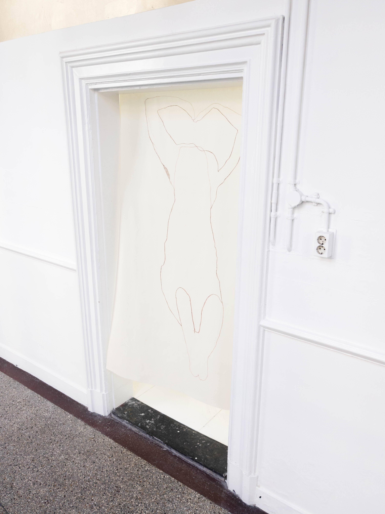

Now working on:
interacting with fabric_03 in NP3:Re:Search Gallery, Groningen; 2025

line entering_nin S.Miguel, Açores; 2025

arm arm's lenght, fabric, paper and staples.

body in space in +SIGN, Groningen; 2024

untitled painting 40x50cm, dry pigments on cotton

untitled, drawing rack 250×353mm, black ink and red ballpoint pens

from image bookSquare_Habitedin S.Miguel, Açores; 2023

from go through me go through you in NP3:Re:Search Gallery, Groningen; 2025

untitled, outlines 250x500cm, pigment/acrylic on cotton; in NP3:Re:Search Galery, Groningen; 2025

line, interaction with in Sweden; 2025

stone, interaction with in Tenerife, Canárias; 2024

take my word for it 80x80cm, inkjet prints and dry pigment on stretched cotton; 2024

in a situationship with god 80x80cm, inkjet prints on stretched cotton; 2023

from i assume material form

making part, Graciosa in Graciosa, Açores; 2021